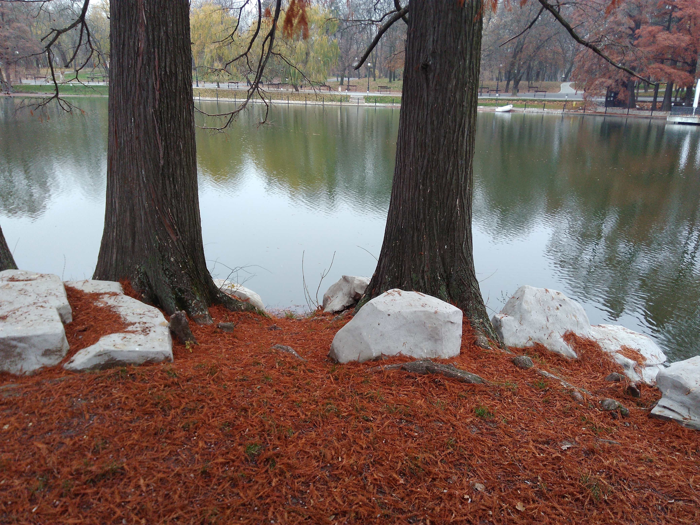
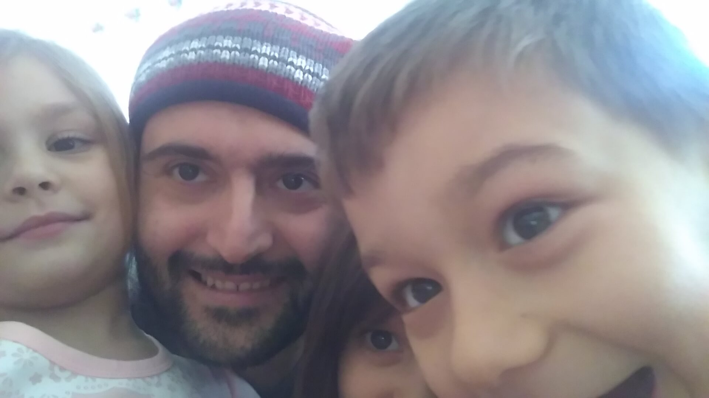

Craiova, Romania
Romania · Oltenia Region
Craiova is one of southern Romania's most distinctive cities,
known for its historic architecture, lively streets, and
cultural heritage. As an important regional centre in Oltenia,
the city combines a rich past with the atmosphere of modern
Romanian urban life. From its elegant city views to the quieter
places connected with everyday life, Craiova offers different
perspectives on the character of the region. The city is also
home to beautiful public spaces, historic buildings, and cultural
institutions that reflect its importance as a regional centre.
Nicolae Romanescu Park, one of the city's best-known landmarks,
adds another dimension to Craiova's urban landscape with its
green surroundings and picturesque scenery. Its combination
of architecture, local traditions, and everyday city life makes
Craiova an interesting destination to discover. These photographs
capture my personal impressions and memories of the city.

City Views
Explore my photographs of Craiova's streets, architecture, landmarks, and urban atmosphere.
Explore Photos ↗
Kindergarten
Discover my photographs and personal memories from a kindergarten in Craiova.
Explore Photos ↗